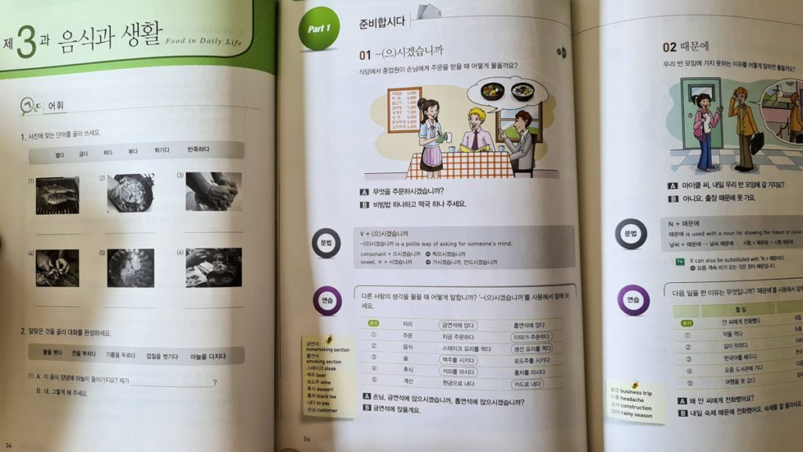
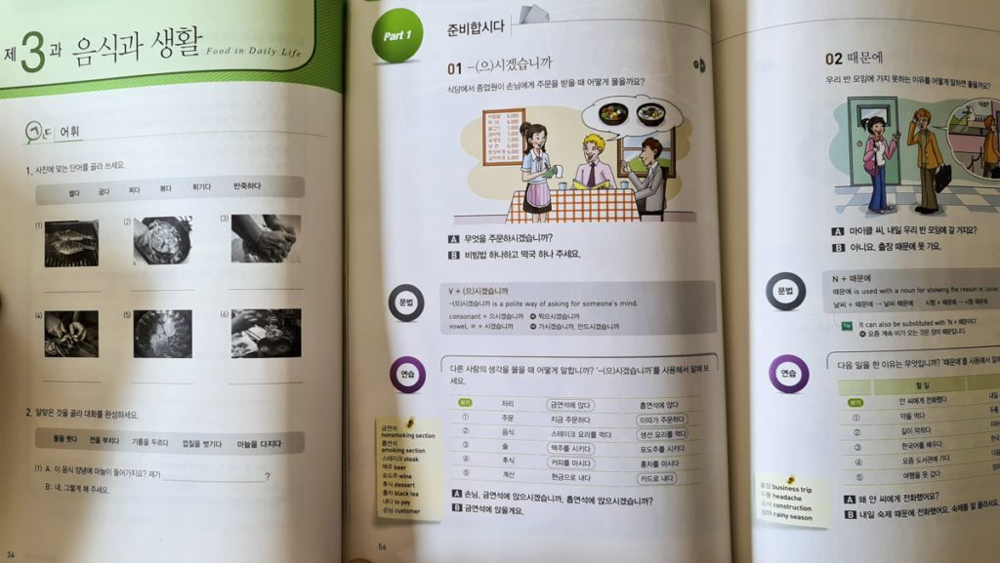
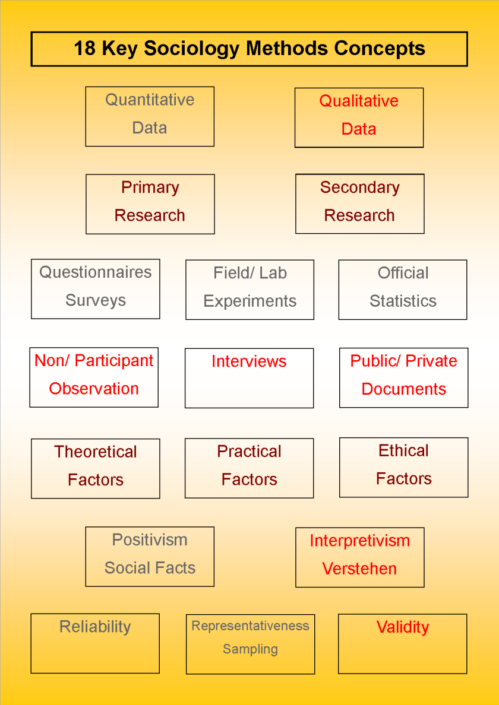
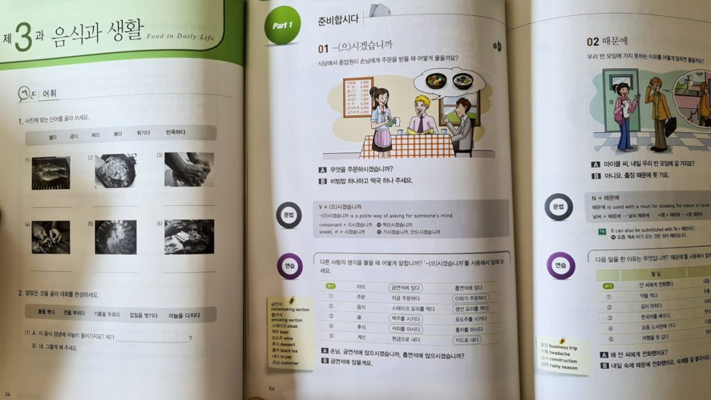
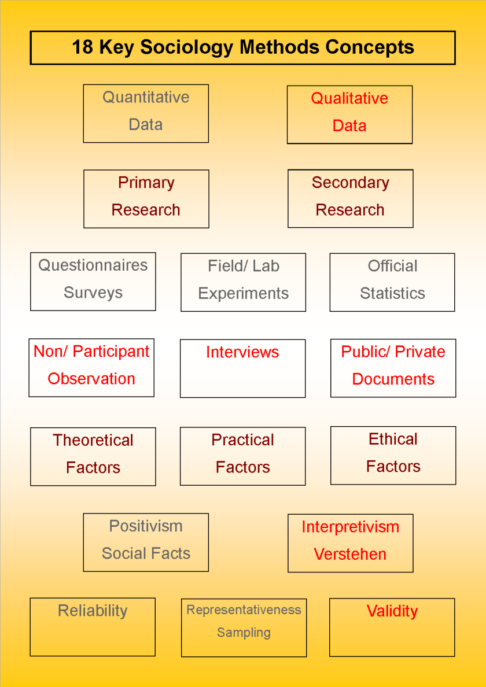

Hessed Paek
I am a researcher. I conduct research about the society and how it affects people and their lives. I travel around a lot while I am conducting my research. I do enjoy the traveling. There are many other factors that I enjoy as a sociologist other than being able to travel. I also get to interact with fellow researchers as well as the people participating in the study. I enjoy helping to gather data for the study.
The topics that I conduct most of my research on are the topics of poverty and culture as well as music. I have an interest in these topics, so I enjoy conducting research in these areas. I have always had an interest in these kinds of topics ever since I was a teenager. Currently, I am conducting an international research study about the modern cultures of each country in the world. I am also planning on researching about the impact of music on each country's daily life. Since the research that I am conducting is about the modern culture in every parts of the world, this will take years of research. Since this resaerch requires huge collection fo data, there are many other sociologists partaking in this huge study. I am also currently partaking in a research study about the factors that impact healthcare.
As well as conducting research of my own, I also partake in research with other sociologists as well. I have also partook in group research about child poverty.
Experience
Praise leader
• Created and managed praise for VBS
• Made schedules for practices
• Experience in figuring out differnet methods that will help the children
Tutor
• Responsible for helping hte children finish their homework
• Teaching them Korean as well as English
Research Assisstant
• Help professor in look over data
• Spend hours with professor conducting research
• Work with other assisstants in handling datan
• Use appropriate research methods
Education
UC Riverside
Portfolio

 


